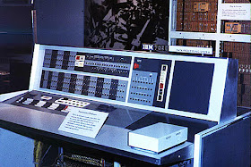
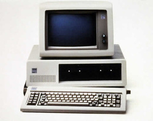
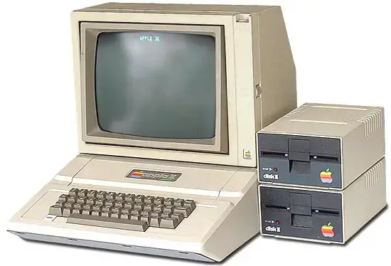

A primeira geração de computadores, que abrangeu aproximadamente a década de 1940 até o início da década de 1950, foi marcada por uma mudança revolucionária na computação, marcando o surgimento dos primeiros computadores eletrônicos. Aqui está um resumo das características distintas dessa primeira geração:
1. Uso de Válvulas Eletrônicas: Os computadores da primeira geração, como o ENIAC e o UNIVAC I, utilizavam válvulas eletrônicas para realizar operações de processamento de dados. Essas válvulas eram grandes, frágeis e geravam muito calor, tornando os computadores volumosos e propensos a falhas frequentes.
2. Programação Manual: A programação dos computadores da primeira geração era feita manualmente, com a inserção de cabos e configurações físicas. Não havia linguagens de programação de alto nível como as que usamos hoje.
3. Baixa Velocidade e Capacidade Limitada: Embora fossem inovadores para a época, esses computadores eram muito mais lentos em comparação com os padrões modernos e tinham capacidade de armazenamento limitada. Executar tarefas complexas exigia muito tempo.
4. Aplicações Científicas e Militares: Os computadores da primeira geração foram usados principalmente para aplicações científicas, como cálculos balísticos e projetos de pesquisa, além de tarefas militares, como criptoanálise e simulações de armas.
5. Grandes Avanços na Computação: Apesar de suas limitações, a primeira geração de computadores representou um avanço significativo na automatização de cálculos e processos, substituindo métodos manuais demorados. Eles pavimentaram o caminho para o desenvolvimento subsequente da tecnologia da computação e inspiraram a criação de máquinas mais avançadas na segunda geração, que incorporaram transistores em vez de válvulas eletrônicas. Essa transição marcou o início da rápida evolução dos computadores modernos.
Harvard Mark I (1944)

A segunda geração de computadores, que abrangeu aproximadamente a década de 1950 até meados da década de 1960, representou um avanço significativo em relação à primeira geração e trouxe mudanças tecnológicas importantes. Aqui está um resumo das características distintivas dessa segunda geração:
1. Transistores Substituíram Válvulas Eletrônicas: A principal inovação da segunda geração foi a substituição das grandes e frágeis válvulas eletrônicas por transistores, dispositivos semicondutores muito menores, mais confiáveis e eficientes em termos de energia. Isso resultou em computadores mais compactos, mais rápidos e com menor consumo de energia.
2. Uso de Memória de Acesso Aleatório (RAM): Os computadores da segunda geração introduziram o uso de memória de acesso aleatório (RAM) para armazenar temporariamente dados e programas, em oposição ao armazenamento em tambor magnético usado na primeira geração. Isso melhorou significativamente a velocidade de acesso aos dados.
3. Linguagens de Programação de Alto Nível: Com a segunda geração, as linguagens de programação de alto nível, como o Fortran e o COBOL, começaram a ser desenvolvidas e amplamente adotadas. Isso permitiu que os programadores escrevessem código de maneira mais eficiente e abstrata.
4. Aplicações Ampliadas: A segunda geração viu uma expansão nas aplicações de computação, abrangendo áreas como pesquisa científica, previsões meteorológicas, modelagem de negócios e processamento de dados em grande escala.
5. Maior Confiabilidade e Disponibilidade: Graças aos transistores e ao aprimoramento da tecnologia, os computadores da segunda geração eram mais confiáveis e estavam disponíveis por mais tempo, contribuindo para uma maior produtividade.
Essa segunda geração de computadores estabeleceu as bases para o desenvolvimento contínuo da computação, preparando o terreno para a terceira geração, que trouxe os circuitos integrados (chips) e deu início à era dos minicomputadores e, posteriormente, dos microcomputadores.

A terceira geração de computadores, que abrangeu a década de 1960 até meados da década de 1970, foi marcada por avanços tecnológicos significativos que impulsionaram a evolução da computação. Aqui está um resumo das principais características dessa terceira geração:
1. Circuitos Integrados (Chips): A principal inovação da terceira geração foi a introdução dos circuitos integrados (ou chips), que permitiram a integração de vários transistores em um único chip de silício. Isso reduziu drasticamente o tamanho dos computadores, aumentou sua velocidade e confiabilidade e reduziu os custos de produção.
2. Minicomputadores: Com os circuitos integrados, surgiram os minicomputadores, que eram computadores menores, mais acessíveis e adequados para uso em laboratórios de pesquisa, universidades e empresas. Isso expandiu o acesso à computação.
3. Sistemas Operacionais: Os computadores da terceira geração frequentemente operavam com sistemas operacionais mais avançados, que facilitavam a interação entre o usuário e o hardware. Isso tornou a programação e o uso dos computadores mais eficientes.
4. Armazenamento Magnético Melhorado: A terceira geração também viu melhorias significativas no armazenamento de dados, com a introdução de discos rígidos e fitas magnéticas de alta capacidade.
5. Expansão das Aplicações: Os computadores da terceira geração foram utilizados em uma ampla gama de aplicações, desde cálculos científicos até processamento de dados comerciais e sistemas de reserva aérea.
6. Desenvolvimento da ARPANET: Nessa época, a ARPANET, precursora da Internet, começou a ser desenvolvida nos Estados Unidos, estabelecendo as bases para a revolução da comunicação e conectividade global.
Essa terceira geração marcou um período de grande avanço tecnológico, tornando os computadores mais poderosos, acessíveis e versáteis. Esses avanços pavimentaram o caminho para o desenvolvimento subsequente da informática e influenciaram profundamente a sociedade moderna.


A quarta geração de computadores, que se estendeu aproximadamente das décadas de 1970 até meados dos anos 80, trouxe avanços notáveis em termos de tecnologia e desempenho. Aqui está um resumo das principais características dessa quarta geração:
1. Microprocessadores: O avanço mais significativo da quarta geração foi a introdução dos microprocessadores, que eram chips únicos capazes de executar todas as funções de processamento de dados. Isso reduziu ainda mais o tamanho dos computadores, aumentou sua eficiência e possibilitou a criação de computadores pessoais (PCs).
2. Computadores Pessoais (PCs): A quarta geração testemunhou a popularização dos PCs, como o IBM PC lançado em 1981, que se tornaram acessíveis para uso doméstico e empresarial. Isso levou a uma revolução na computação pessoal e à criação de um mercado massivo de hardware e software.
3. Expansão do Software: A disponibilidade de PCs incentivou o desenvolvimento de uma ampla variedade de software, desde sistemas operacionais, como o MS-DOS, até aplicativos de produtividade e jogos. Isso tornou os computadores mais versáteis e úteis para tarefas cotidianas.
4. Interfaces Gráficas e Mouse: A quarta geração também viu o surgimento de interfaces gráficas de usuário (GUIs) e dispositivos de entrada como o mouse. Isso tornou a interação com o computador mais intuitiva e amigável.
5. Redes de Computadores: As redes de computadores começaram a se expandir, permitindo a comunicação e o compartilhamento de recursos entre computadores. Isso desempenhou um papel fundamental na evolução da Internet.
6. Computação Portátil: Embora ainda em estágios iniciais, a quarta geração também viu o desenvolvimento de computadores portáteis, como os primeiros laptops, embora eles fossem volumosos em comparação com os modelos modernos.
A quarta geração de computadores marcou uma transformação significativa na computação, tornando-a mais acessível, poderosa e incorporada ao cotidiano das pessoas e empresas. Os avanços tecnológicos desse período continuaram a impulsionar a evolução da informática nas décadas seguintes.
 A quinta geração de computadores representa uma era de avanços notáveis em tecnologia e computação, com foco na inteligência artificial e no processamento de informações de maneira mais semelhante à capacidade humana. Aqui está um resumo das principais características da quinta geração:
1. Inteligência Artificial (IA): A quinta geração é fortemente marcada pelo desenvolvimento e uso generalizado de inteligência artificial. Os computadores dessa geração são capazes de aprender com dados, tomar decisões autônomas, processar linguagem natural e realizar tarefas complexas de forma autônoma.
2. Aprendizado de Máquina (Machine Learning): A capacidade de aprendizado de máquina é uma parte essencial da quinta geração. Os computadores podem analisar grandes conjuntos de dados e aprender com eles, identificando padrões e fazendo previsões com base nesses dados.
3. Processadores Avançados: A quinta geração viu o desenvolvimento de processadores mais rápidos e eficientes, projetados para lidar com as demandas computacionais intensivas da inteligência artificial e do aprendizado de máquina.
4. Interfaces de Usuário Avançadas: Interfaces de usuário mais intuitivas e avançadas, como assistentes virtuais e sistemas de reconhecimento de voz, tornam a interação com os computadores mais natural e acessível.
5. Aplicações Diversificadas: A quinta geração tem aplicações em uma ampla variedade de setores, incluindo medicina, finanças, automação industrial, jogos, veículos autônomos e muito mais.
6. Expansão da Robótica: A robótica avançou consideravelmente, com robôs cada vez mais capazes de realizar tarefas complexas, interagir com humanos e aprender com experiências.
7. Envolvimento na Sociedade: A tecnologia da quinta geração tem um impacto significativo na sociedade, influenciando questões como privacidade, ética, automação de empregos e a forma como interagimos com a tecnologia no dia a dia.
A quinta geração de computadores representa um marco na evolução da computação, permitindo que os sistemas se aproximem da inteligência humana e expandindo significativamente as possibilidades de aplicação da tecnologia em diversos campos.


A história da internet é uma narrativa fascinante que remonta ao final da década de 1960 até os dias de hoje. Aqui está um pequeno resumo:
Década de 1960 - A ARPANET nasce: A internet teve suas raízes no projeto ARPANET (Advanced Research Projects Agency Network), financiado pelo Departamento de Defesa dos EUA. Em 1969, a ARPANET estabeleceu a primeira conexão entre computadores na Universidade da Califórnia, Los Angeles (UCLA) e no Instituto de Pesquisa Stanford.
Década de 1970 - Padrões e E-mail: Durante os anos 70, foram desenvolvidos os protocolos fundamentais para a comunicação na rede, como o TCP/IP. O envio de mensagens eletrônicas (e-mail) também se tornou possível.
Década de 1980 - Expansão Acadêmica e Comercial: A internet começou a se espalhar nas universidades e instituições acadêmicas. A NSFNET, financiada pela National Science Foundation dos EUA, desempenhou um papel importante nesse crescimento. Com o tempo, empresas e usuários comerciais começaram a se conectar.
Década de 1990 - A Era da World Wide Web: A invenção da World Wide Web por Tim Berners-Lee, em 1991, revolucionou a internet. A web tornou a internet mais acessível ao público em geral, permitindo a criação de sites com hiperlinks e conteúdo multimídia.
Década de 2000 - A Internet se torna onipresente: A internet cresceu exponencialmente em popularidade e acessibilidade. A banda larga se tornou comum, e serviços como redes sociais, mecanismos de busca e comércio eletrônico floresceram.
Década de 2010 e Além - A Era da Conectividade Móvel e da IoT: A expansão da conectividade móvel levou a um aumento no uso da internet em dispositivos móveis. A Internet das Coisas (IoT) trouxe uma nova dimensão à conectividade, com objetos do cotidiano se tornando "inteligentes" e conectados à internet.
Hoje, a internet é uma parte essencial da vida moderna, impactando praticamente todos os aspectos da sociedade, desde a comunicação e o entretenimento até a educação e os negócios. Ela continua a evoluir rapidamente, impulsionando a inovação e a interconexão global.
Grace Murray Hopper
Joseph Carl Robnett Licklider

Robert E. Kahn

Tim Berners-Lee
Marc Andreessen
Bill Gates

Steve Jobs

Clients são dispositivos, programas ou sistemas que acessam serviços, recursos ou informações de um servidor em uma rede de computadores. Esses clientes são parte fundamental da arquitetura cliente-servidor, que é um modelo comum de comunicação e interação na internet e em redes locais.


Navegadores de internet, também conhecidos como browsers, são aplicativos de software projetados para permitir que os usuários acessem, naveguem e interajam com conteúdo na World Wide Web. Eles desempenham um papel fundamental na experiência de navegação na internet e são responsáveis por interpretar e exibir páginas da web, além de fornecer recursos de pesquisa, gerenciamento de favoritos e acesso a recursos online. Alguns dos navegadores mais populares incluem o Google Chrome, Mozilla Firefox, Microsoft Edge, Safari e Opera, cada um com suas características e funcionalidades específicas. Os navegadores modernos também oferecem suporte a tecnologias como HTML5, CSS3 e JavaScript, permitindo uma experiência de navegação rica e interativa na web. Em suma, os navegadores de internet são a porta de entrada para a vasta e diversificada paisagem da internet, tornando a web acessível e explorável para os usuários de todo o mundo.

Aplicações Web são soluções criadas que possuem a internet como meio de comunicação entre Client x Server não sendo necessário a sua instalação.


Servers são computadores ou sistemas de computação projetados para fornecer serviços, recursos, informações ou funcionalidades para outros computadores, dispositivos ou programas em uma rede. Eles desempenham um papel fundamental na infraestrutura de rede e na entrega de serviços na internet e em redes locais. Os servidores são projetados para serem confiáveis, eficientes e disponíveis para atender às solicitações dos clientes.
Hardware de servidor: Componentes físicos, como processador, memória, armazenamento, placa-mãe e fonte de alimentação, que constituem o servidor.
Software de servidor: Programas e sistemas operacionais que controlam o hardware e fornecem serviços, como servidores web, de e-mail e de banco de dados.
Função do servidor: Armazenar, processar e disponibilizar recursos e serviços em redes, como a internet.


Linguagem de Programação é uma linguagem escrita e formal que especifica um conjunto de instruções e regras usadas para gerar programas (software).

A linguagem server-side, também conhecida como linguagem de servidor, é uma linguagem de programação usada para criar aplicativos e serviços que são executados nos servidores web. Esses aplicativos são responsáveis por processar solicitações dos clientes, como navegadores da web, e fornecer respostas dinâmicas e personalizadas. Linguagens server-side incluem PHP, Python, Ruby, Node.js, entre outras.
Em resumo, a linguagem server-side é usada para desenvolver a lógica de back-end de um site ou aplicativo web, gerenciando o processamento de dados, a segurança, o acesso ao banco de dados e outras tarefas no servidor, antes de enviar as páginas resultantes para exibição nos navegadores dos usuários. Ela desempenha um papel crítico na criação de aplicações web interativas e dinâmicas.


A linguagem client-side, também conhecida como linguagem do lado do cliente, refere-se à programação e ao código executados diretamente no navegador ou dispositivo do usuário. Ela é usada para criar interatividade e funcionalidade em páginas da web e aplicativos que são executados no ambiente do cliente, sem a necessidade de interações constantes com o servidor.
As principais linguagens client-side incluem HTML (para estruturação de conteúdo), CSS (para estilização visual) e JavaScript (para interatividade e dinamismo). Com essas linguagens, os desenvolvedores podem criar interfaces de usuário atraentes, validar dados em formulários, manipular elementos da página, entre outras funcionalidades, tudo diretamente no navegador do usuário.
Em resumo, a linguagem client-side é responsável por tornar as páginas da web interativas e dinâmicas, com código que é executado no dispositivo do usuário, proporcionando uma experiência mais rica e responsiva.